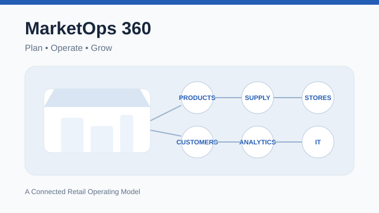

Technology Delivery
Bring stakeholders, priorities, plans and dependencies together to move complex initiatives forward.
I work across business and technology to bring clarity to complex initiatives, align teams around meaningful outcomes and help turn ideas into dependable digital experiences.
A business-facing perspective shaped by enterprise technology, cross-functional collaboration and practical problem solving.
Bring stakeholders, priorities, plans and dependencies together to move complex initiatives forward.
Connect customer and operational needs with thoughtful process change and useful digital experiences.
Build shared confidence across teams through clear decisions, integration awareness and delivery discipline.
Independent examples of business challenges and digital experiences. I’m happy to discuss the thinking and decisions behind them.

A connected retail operating model spanning products, supply chain, stores, customers, analytics and technology delivery.
Explore demonstration ↗A business-focused view of value streams, priorities and delivery coordination in a commercial insurance setting.
Explore demonstration ↗An enterprise information experience exploring how fragmented customer records can become a more consistent, trusted view.
Explore demonstration ↗A family-focused planning experience bringing everyday financial decisions and longer-term questions into one approachable journey.
Explore demonstration ↗An illustrative insurance experience connecting customer, producer and operational journeys in one coherent view.
Explore demonstration ↗A commercial insurance scenario showing how employer, producer and service activities connect across the policy lifecycle.
Explore demonstration ↗A retirement operations scenario focused on employer onboarding, participant experience and coordinated service journeys.
Explore demonstration ↗A portfolio perspective on business priorities, initiative sequencing and delivery oversight in a commercial insurance environment.
Explore demonstration ↗A business commerce experience connecting product discovery, ordering and operational fulfilment.
Explore demonstration ↗A customer-facing commerce experience focused on clear journeys, consistent presentation and ease of use.
Explore demonstration ↗An identity experience exploring secure access, account recovery and role-aware digital journeys.
Explore demonstration ↗Understand the outcome, create shared direction, make trade-offs visible and keep improving.
Clarify the business need and desired outcome.
Connect people, priorities and dependencies.
Surface risks and decisions early.
Maintain focus and accountability.
Use outcomes to strengthen what comes next.
My work has spanned enterprise technology delivery, business analysis, engineering and quality leadership, and systems transformation. I bring a practical understanding of how business goals, people, platforms and delivery decisions intersect across industries.
If my background or selected work raises a question, I’d welcome a conversation. I’m happy to share more context about the decisions and outcomes behind these examples.